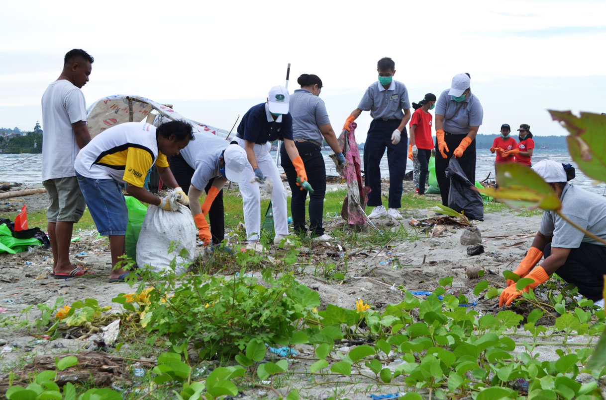

Untuk Menyelamatkan Dunia, Kita Harus Melakukan Pelestarian Lingkungan

Tangan yang melakukan pelestarian lingkungan adalah tangan yang paling indah.
做環保的手，是最美的手。
-Master Cheng Yen
Baru-baru ini, ada banyak hal yang tidak normal dalam cuaca kita.
Ilmuwan menemukan bahwa penyebab utama dari dari perubahan iklim yang dahsyat ini dapat ditelusuri jejaknya dalam polusi lingkungan alam kita.
Bagaimana kita dapat meminimalkan terjadinya bencana alam? Apa yang bisa kita lakukan untuk generasi masa depan kita?
Pada tahun 1990, ketika Master Cheng Yen menyampaikan ceramah di Taichung, Taiwan Tengah, ia mendorong pendengarnya untuk
"menggunakan tangan yang mereka pakai untuk bertepuk tangan untuk menjaga lingkungan" dan menganjurkan memilah-milah sampah.
Seorang perempuan muda segera menjawab panggilannya. Dia mulai memimpin kegiatan daur ulang di lingkungannya,
dan bahkan mendonasikan dana yang ia dapat dari kegiatan tersebut untuk amal.
Di Indonesia, program pelestarian lingkungan Tzu Chi dimulai sejak 1 Januari 2004. Sebuah gudang khusus seluas 500 m2 di Perumahan Cinta Kasih Tzu Chi Cengkareng, Jakarta Barat dibangun untuk menampung sampah daur ulang. Sampah-sampah berupa kertas, plastik, alat rumah tangga, aluminium, hingga meja kursi bekas, dikumpulkan dari para relawan. Sejak saat itu, Pelestarian Lingkungan pun semakin digalakkan dan terus berkembang hingga terdapat 20 Depo Pelestarian Lingkungan Tzu Chi di beberapa wilayah di Indonesia. Depo pelestarian lingkungan ini membuat relawan semakin bersemangat untuk melakukan pengumpulan dan pemilahan sampah. Tak sedikit relawan yang menjadikan rumahnya sebagai depo pelestarian lingkungan mini. Mereka menampung sampah daur ulang yang diberikan oleh para tetangga, bahkan setiap harinya, tanpa ragu, malu, dan kenal lelah, mereka menjemput sampah tersebut ke rumah-rumah. Semua dilakukan demi satu hal, membantu melindungi bumi yang sedang sakit.
Meskipun Yayasan Buddha Tzu Chi telah berupaya melakukan pelestarian lingkungan melalui kegiatan pemilahan sampah, nyatanya sampah terus menjadi ancaman bagi ekosistem, baik di darat maupun di laut, khususnya Indonesia.
Setiap tahun sebanyak 1.290.000 ton sampah dibuang ke sungai dan bermuara ke lautan.
Dari jumlah tersebut, sebanyak 13.000 plastik mengapung di setiap kilometer persegi setiap tahunnya yang menasbihkan Indonesia menjadi negara nomor dua di dunia dengan produksi sampah plastik terbanyak di lautan.
Maka dari itu perlu sekali pemahaman dan pengenalan secara mendetail mengenai lingkungan, bagaimana melestarikan lingkungan dan apa saja yang menyebabkan tercemarnya lingkungan.
Edukasi tentang lingkungan dan pelestarian lingkungan dapat dimulai dari sekolah, agar dengan kesadaran sejak dini, akan mengurangi produksi sampah atau tidak menciptakan sampah baru yang berdampak pada lingkungan.
Melihat kondisi ini, Sekolah Cinta Kasih Tzu Chi berinisiatif ikut serta dalam upaya menyelamatkan lingkungan melalui
Gerakan Peduli Lingkungan (GPL)
Gerakan ini bertujuan meningkatkan kesadaran siswa akan pentingnya menjaga kebersihan sejak dini.
Melalui pendekatan langsung, sekolah mengajarkan langkah-langkah sederhana yang dapat dilakukan setiap hari untuk menjaga kelestarian bumi.
Gerakan peduli lingkungan di Sekolah Cinta Kasih Tzu Chi sudah berjalan lebih dari lima tahun. Gerakan ini bertujuan untuk peduli terhadap lingkungan terutama sampah. Sampah yang kita buang haruslah dipilah mana yang masih bisa didaur ulang kembali atau tidak. Untuk itu, setiap selasa dan jumat, para siswa-siswi Sekolah Cinta Kasih Tzu Chi diminta untuk membawa sampah daur ulang berupa botol plastik,kertas,kardus,dan lain-lain. Meskipun tampak sederhana, gerakan ini melahirkan dampak besar. Dengan GPL yang berlangsung rutin dua kali seminggu, siswa dan guru berkontribusi nyata dalam upaya menyelamatkan bumi. Inisiatif ini tidak hanya meningkatkan kesadaran lingkungan di kalangan siswa, tetapi juga sejalan dengan Misi Tzu Chi indonesia yang didirikan oleh Master Cheng Yen, yakni pelestarian lingkungan.